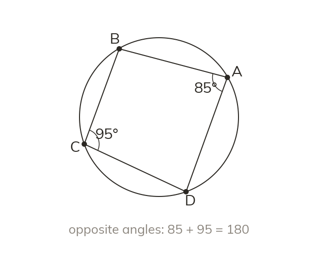

Cyclic quadrilaterals
A cyclic quadrilateral has all four vertices on one circle. Its opposite angles sum to 180°. This is a new theorem, one pair at a time.
A cyclic quadrilateral has all four vertices on the circumference of the same circle. Its opposite angles sum to 180° – this is a new theorem, not the ordinary "angles in a quadrilateral sum to 360," and it applies to ONE PAIR of opposite angles at a time.